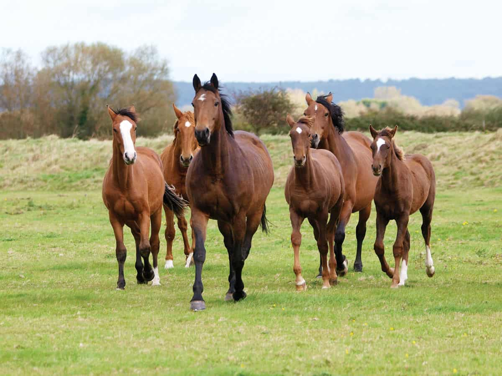

Facts about Horseracing
Here are some interesting facts about Horseracing:
- The races are Britain's 2nd favourite sport after Football.
- The world leading industry generates ~£4bn annually in expenditure for the UK.
- The sport has been subjected to criticism for its association with Horse doping/whipping, along with match fixing.
The most common Horse breeds in the UK are:
-
Thouroughbreds
- Popularly trained for horse racing, this breed is characterised for their speed, strength and athleticism.

- Arabian horse
- Regarded as one of the oldest breeds in history, these animals originated in the Arabian peninsula.

- Mustang
- Free roaming wild horse originating in North america. Known traits are their speed, adaptibility, long distances.

For more info on Horses, visit here